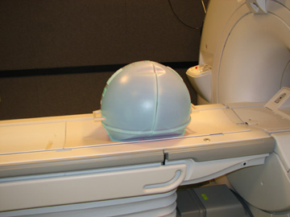
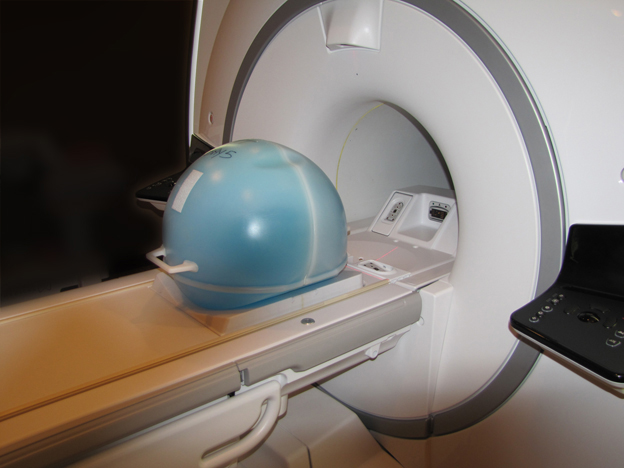
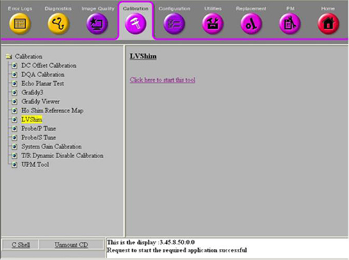
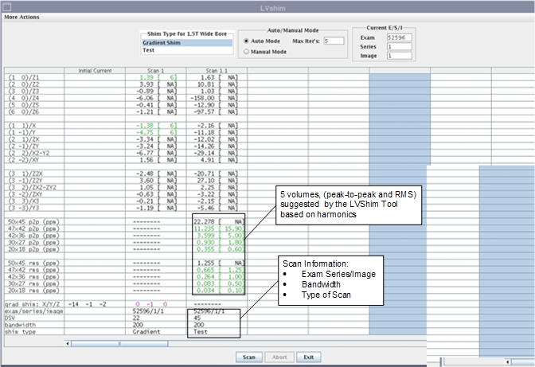
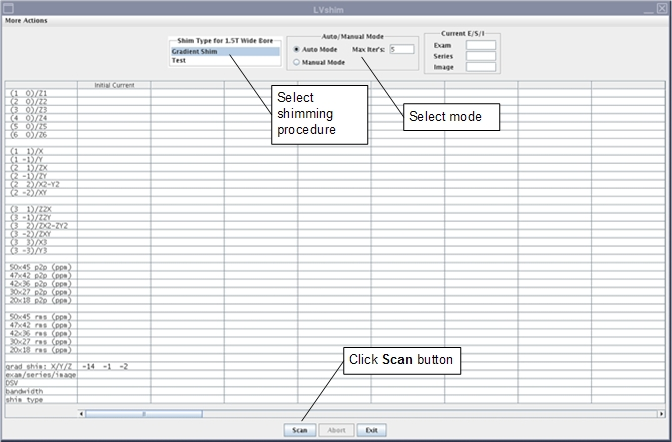
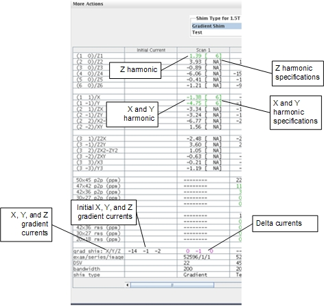

GE Exclusive Use Only
Direction 5670006, Rev# 1
Discovery MR750w GEM Service Methods
Module Version 26.0, Version Date 10/13/11
GE Exclusive Use Only |
| Required Persons | Preliminary Reqs | Procedure | Finalization |
|---|---|---|---|
| 1 | Not Applicable | 30 minutes | 10 mins |
LVShim - Gradshim
| Item | Qty | Effectivity | Part# | Manufacturer | |
|---|---|---|---|---|---|
| LVShim Phantom Assembly for 750w GEM | 1 | - | 2298119 | - | |
| Curved Cradle Insert | flat GEM tables only | 5401439 | - | ||
| ||||
| POISON HAZARD! | ||||
| 1.5T Phantoms CONTAIN NICKEL, A SUSPECT CARCINOGEN. | ||||
| DO NOT INGEST. DISPOSE OF AS A HAZARDOUS WASTE ACCORDING TO STATE AND FEDERAL REGULATIONS. |
| ||||
| POISON HAZARD! | ||||
| 3.0T Phantoms CONTAIN Silicon Oil. | ||||
| DO NOT INGEST. DISPOSE OF AS A HAZARDOUS WASTE ACCORDING TO STATE AND FEDERAL REGULATIONS. |
| Condition | Reference | Effectivity |
|---|---|---|
A phantom centering check scan and center frequency check using manual prescan should be performed prior to starting the LVShim automated tool. This frequency should be saved using Save Frequency while performing the manual prescan. | - | - |
| NOTE: | To reduce cost, the MR750w system uses the 1.5T phantom, or the phantom with the blue solution. |
Remove all coils from the cradle and phantoms from the bore.
| ||||
| Perform a Localizer scan to ensure the phantom is centered before performing the LVShim. | ||||
Set up and align the LVShim Phantom as shown in the following illustrations.
See Illustration 1 for the curved cradle. See Illustration 2 for the flat or GEM cradle.
Illustration 1: Placing LVShim Phantom on Cradle

| ||||
| Perform a Localizer scan to ensure the phantom is centered before performing the LVShim. | ||||
Place the curved insert (5401439) into the patient table. Place the LVShim Phantom on the insert. See the following illustration.
Illustration 2: Placing LVShim Phantom on Cradle

Landmark on the LVShim phantom.
Press the [Advance to Scan] button.
Start the LVShim tool. The tool can be started in proprietary or non-proprietary mode.
To start LVShim in proprietary mode:
Insert the Restricted Service Key into the USB port of the Host Computer (if it is not already inserted).
Click the Service Browser.
Select the Calibration tab, and click Installation and Calibration to start the wizard.
Select the appropriate shim (Gradient Shim) to be performed from the drop-down list. This launches the LVShim tool.
To start LVShim in non-proprietary mode:
Click the Calibration tab shown in the following illustration.
Illustration 3: Starting LVShim Tool in Service Browser

Select LVShim from the Calibration menu, and click the link labeled Click here to start this tool.
The LVShim tool launches. The following illustration shows an overview of this tool.
Illustration 4: Example of the LVShim Tool

By default, Gradshim is performed in Auto mode, though Manual mode is also available.
In Auto mode, gradient currents are automatically calculated after the [Scan] button is clicked to fine tune the homogeneity of the magnet. In this mode, the tool stops after the X, Y and Z harmonics are within specification. In Test mode, the image from the last scan is automatically reanalyzed. (See Illustration 5.)
Illustration 5: Gradient Shim
Click [Scan] shown in Illustration 6.
Illustration 6: LVShim Tool User Interface

In Auto mode, the tool does the following:
Sets up the protocol and collects image data
Calculates the delta currents and the new currents based on the harmonics
Completes multiple iterations (maximum = 5) until harmonics meets the specification
Shows the reanalysis of the last iteration in the final column in Test mode (customer acceptance specification)
Click the [Scan] button shown in Illustration 6.
Green cell = Passed spec
Red cell = Failed spec
Illustration 7: Gradient Harmonics and Gradient Bits

The tool calculates the X, Y and Z gradient delta currents (for gradient bits only) and the new currents based on the harmonics in another window. (The currents shown in Illustration 8 are examples only.)
Illustration 8: Original Delta and New Currents (Examples)

In the LVShim user interface:
If X/Y/Z harmonics data cells are green, decline the new currents by clicking the [Cancel] button. Ignore cells with the specification, NA.
If any harmonics data cells are red, accept the new currents by clicking the [Dial In Currents] button. The new currents will load in a new column in the LVShim user interface as shown in Illustration 7. Repeat Step 1.
| NOTE: | If after five manual iterations any cell is still red, click [More Actions] and select Expert Mode. (For a description of Expert Mode functions, see Expert Mode Features of LVShim). |
Click [Exit] in the LVShim window when all iterations are complete and all harmonics are within specification.
Remove any phantoms and/or tools used.
Perform a Check Scan before turning the unit over to the customer.